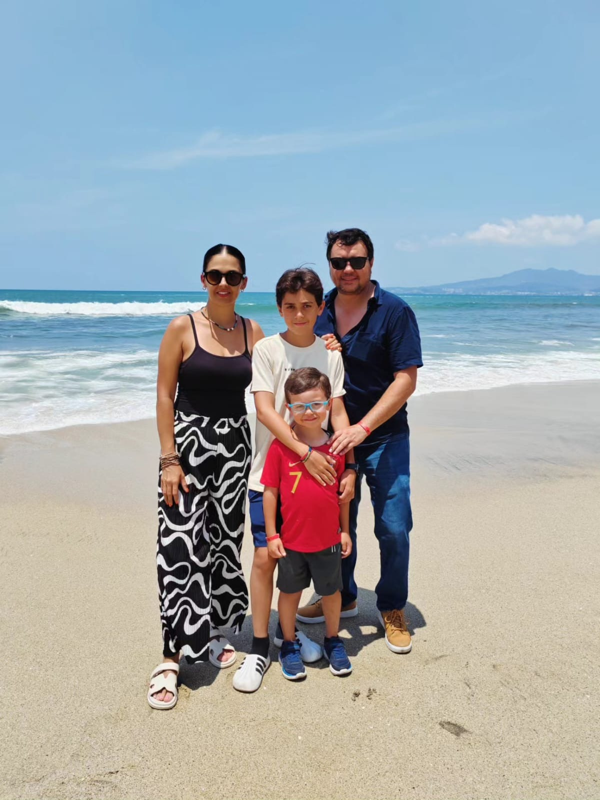
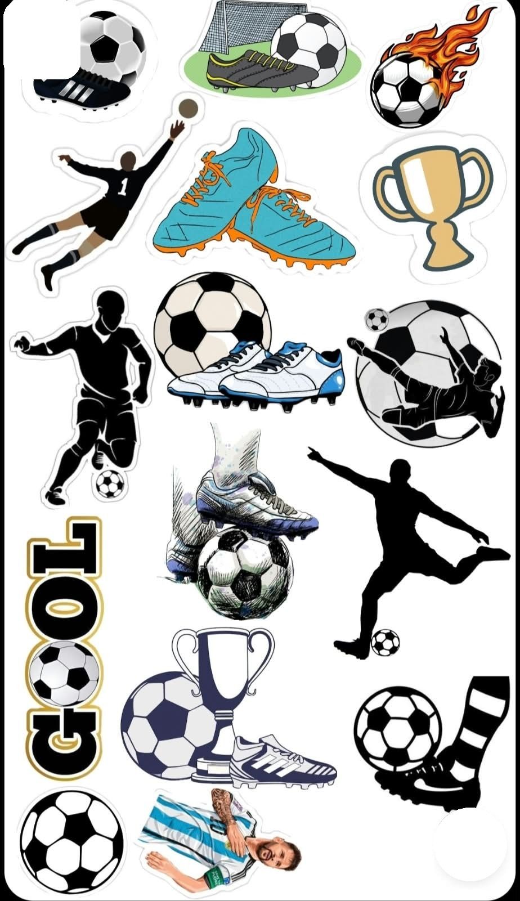

Portada
Recorta el recuadro y pégalo en la cartulina. Agrega stickers alrededor.
Mi familia,
mi lugar especial
Autor: Mateo · 1.° Green
✂ recortar por la línea punteada
Página 1 · Así soy yo
Fondo: hoja verde. Recorta la foto y la tira de texto; Mateo dibuja y repasa las letras.
Así me dibujo yo
M
i nombre es
M
ateo.
T
engo 6 años.
M
e gusta el f
ú
tbol.
✂ recortar por la línea punteada
Página 2 · Mi familia
Fondo: hoja azul. Pega la foto y coloca cada etiqueta junto a la persona.

➜
M
am
á
A
na
➜
P
ap
á
J
os
é
L
uis
➜
M
anito
J
os
é
L
uis
➜
Y
o
M
ateo
E
sta es mi familia.
✂ recortar por la línea punteada
Página 3 · Mi familia hace
Fondo: hoja roja. Mateo dibuja en el recuadro grande y en los tres pequeños.
M
e gusta jugar f
ú
tbol
con mi familia.
Mi dibujo: jugando fútbol con mi familia
También me gusta:
jugar juegos de mesa
hacer la tarea con mis pap
á
s
viajar
✂ recortar por la línea punteada
Página 4 · Lo que amo de mi familia
Fondo: hoja verde o azul. Recorta el corazón; Mateo repasa las letras y lo colorea.
L
o que m
á
s me gusta
de mi familia es que
es divertida, cariñosa
y le gusta el f
ú
tbol.
🏆
L
a mejor familia
✂ recortar por la línea punteada
Stickers de fútbol
Recorta los que más te gusten para decorar la portada y las páginas.
